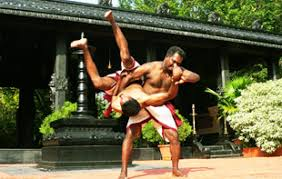

Keralatourism
The Heart of Kannur Culture
culture and Tradition
Theyyam
a ritual dance drama—originated in Kannur’s tribal temples (Kavus) and stands as the most defining cultural tradition of the region.
Go somewhere
Kalarippayattu
This ancient martial art form emphasizes the coordination of mind and body through rigorous training.
Go somewhere
Folk Arts
Kannur is a center for various folk arts and dances, with each tribe and caste having its own unique traditions.
Go somewhereThe Beauty of Kannur
Top Attractions in Kannur
Payyambalam Beach. 4.1. 367. Beaches.
Thottada Beach. 4.5. 202.
Palakkayam Thattu. 4.6. Mountains
Kottiyoor Mahadeva Temple. 5.0. Religious Sites.
Rajarajeshwara Temple. 4.6. Points of Interest & Landmarks.
Kavvayi Islands. 4.6. Islands.
Fort St. Angelos. 4.1.
